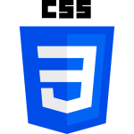
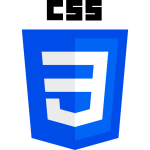

Giulia de Moura Carnevale

Olá! Meu nome é Giulia de Moura Carnevale, tenho 19 anos e atualmente curso Sistemas para Internet na FATEC Rubens Lara. Desde cedo, desenvolvi um forte interesse pela área de programação, o que tem me motivado a explorar constantemente novas linguagens e tecnologias. No momento, estou aprofundando meus conhecimentos em desenvolvimento Front-end e Back-end, com foco em HTML, CSS e C#. Além disso, venho estudando JavaScript para ampliar ainda mais minhas habilidades. Busco sempre me aprimorar, seja por meio de projetos práticos, pesquisas ou trocando experiências com pessoas que partilham da mesma paixão que eu pela tecnologia.
Além da formação acadêmica, trabalho como professora o que tem contribuído significativamente para o meu desenvolvimento em comunicação, organização e liderança. Sou fluente em inglês, o que me permite acessar conteúdos técnicos internacionais e me comunicar com pessoas de diferentes partes do mundo. Fora do ambiente acadêmico, sou apaixonada por jogos, especialmente os dos gêneros terror psicológico e "soulslike", além de gostar de ouvir músicas de diversos estilos, ler e desenhar.
Conhecimentos
 
